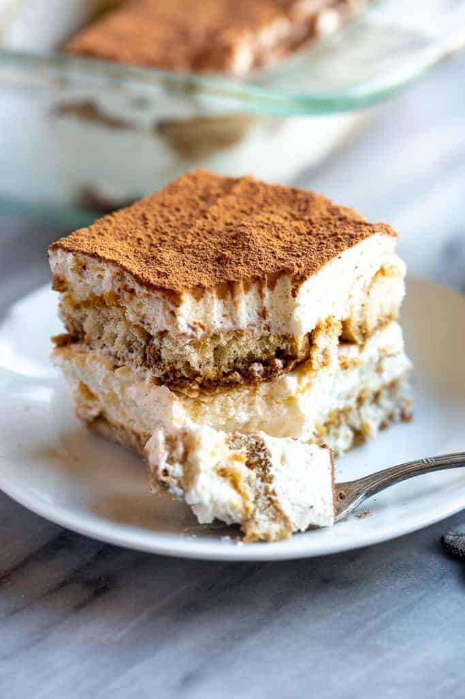
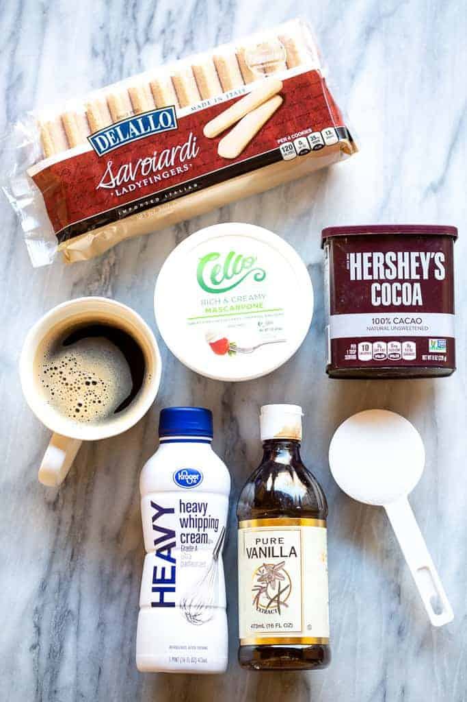

The Perfect Tiramisu
This is the perfect Tiramisu recipe. It is quick and easy to make, and it is delicious. This recipe is only four steps and only takes ten minutes

Ingredients:
- Ladyfingers
- Mascarpone
- Coffee
- Heavy Whipped Cream
- Granulated Sugar
- Vanilla Extract
- Cocoa Powder

Steps:
- Mix creamy filling: Beat the mascarpone, cream, sugar, and vanilla together until stiff peaks.
- Dip lady fingers: Add the coffee to a shallow bowl and dip the lady fingers on both sides (don't let them soak, just a quick dip!)
- Layer mascarpone: Smooth a layer of the mascarpone/whipped cream mixture on top of the lady fingers.
- Repeat. Add another layer of lady fingers (dipped in coffee) and another layer of cheese mixture. Dust with cocoa powder.